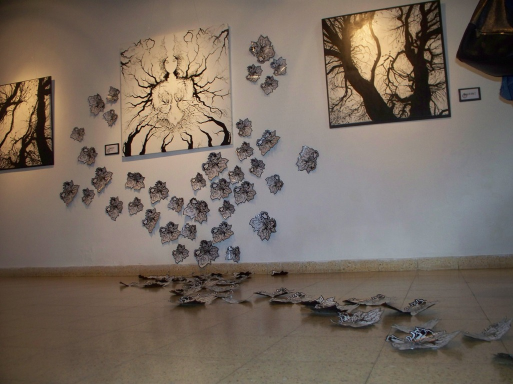
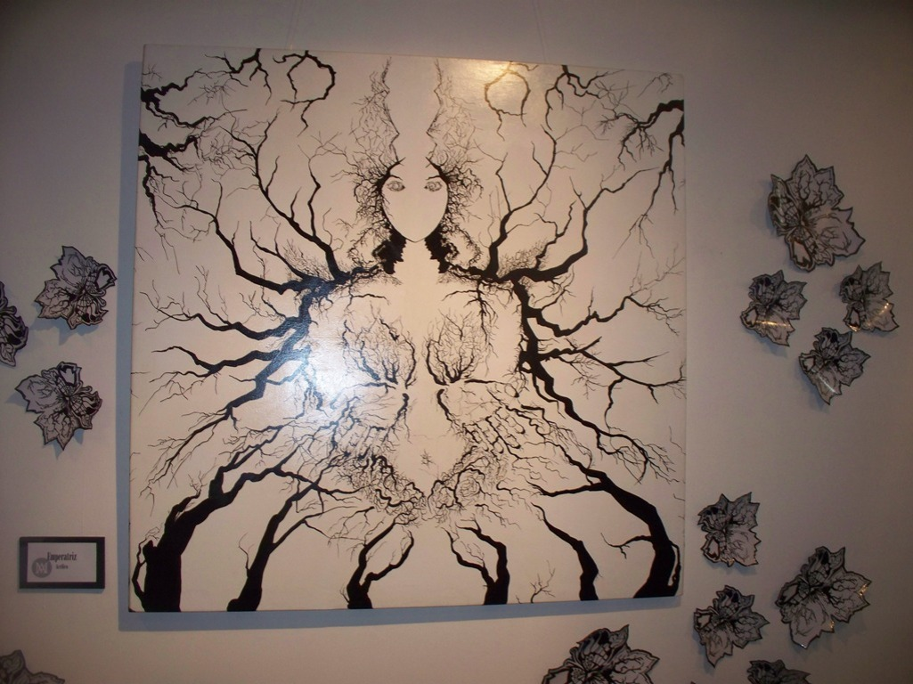

Silvia Alarcón expone «Muta» o las transformaciones abstractas de la naturaleza
MARZO 16, 2016

La artista plástica Silvia Alarcón presentó su primera exposición «Muta» en el Museo Juan Yaparí, integrada por varios cuadros y mariposas que desde el piso «intentan subir hacia el cuadro de la Emperatriz como en un cuento mitológico», otras trepan por una de las columnas de la sala, todo expresa «un proceso personal» de la joven autora que eligió trabajar en blanco y negro porque » me fascina, el blanco porque significa pureza y negro no por luto sino por elegancia», aclaró.
La inauguración oficial fue el pasado jueves a la noche. Ella plantea «Muta» porque «cambia, todo se transforma en la selva misionera que está llena de entramado y conexiones, yo trabajo mucho en la abstracción en la naturaleza sin colores vivos», dijo, en contraste con su amiga Alejandra Ciganda, con quien comparte la muestra al mismo tiempo en la sala planta baja, obras que reflejan la naturaleza misionera y también mariposas pero con todos los colores.
«La naturaleza se transforma, como las mariposas, ella muestra el invierno en los árboles que muestran la energía de la época como nubes y la bruma», siguió argumentando Alarcón.
Ella es oriunda de Quilmes, provincia de Buenos Aires, de chica se trasladó con sus padres a Gobernador Virasoro, Corrientes, donde estuvo viviendo un tiempo, y de allí la cercanía de Posadas la atrajo buscando nuevos rumbos, pero también «encontré el amor acá y me establecí, primero vivía en la casa de un hermano hasta que me decidí estudiar arte en el instituto Montoya, el arte siempre me atrajo de chiquita pero tenía miedo a lanzarme y cómo surgir con las pinturas, porque sólo dibujaba, no sabía como transmitir lo que me pasaba adentro, gracias a mi amiga Alejandra que me alentó».
«Teresa Warenycia me enseñó a ser artista»
Fue una de las alumnas de la recordada artista plástica Teresa Warenycia. Ella fue mi profesora de pintura en el Montoya, tenía una personalidsd muy fuerte, de carácter firme y muchas veces nos hizo renegar a los alumnos, ella te exprimía y sacaba ese jugo que era lo mejor de vos, le tengo que agradecer muchísimo todo lo que aprendí de ella», y confió cuando estaba armando la exposicion «fui a hablar con ella tres días antes de lo sucedido, le había pedido a ella que escriba algo para la muestra y me respondió ‘por qué eso de que un artista consagrado tiene que agarrar y darle honores a otro que empieza, no, escribí vos’, yo le insistí y ella volvió a negarse y me repitió hacelo, hacelo».
La exposición podrá ser visitada hasta el 10 de abril próximo en el museo ubicado en Sarmiento entre Félix de Azara y Colón.

